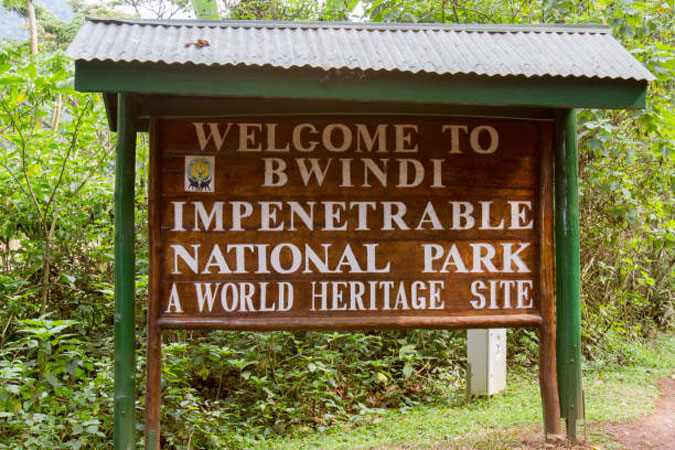
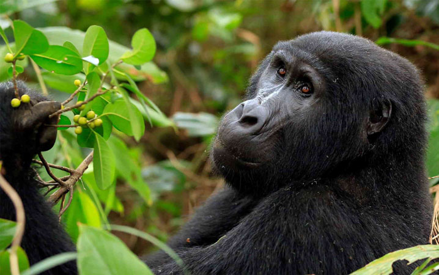

Bwindi Impenetrable
Bwindi Impenetrable National Park lies in southwestern Uganda on the edge of the Rift Valley.
Its mist-covered hillsides are blanketed by one of Uganda’s oldest and most biologically diverse rain forests,
which dates back over 25,000 years and contains almost 400 species of plants. More famously, this “impenetrable
forest” also protects an estimated 459 mountain gorillas – roughly half of the world’s population, including sever
al habituated groups, which can be tracked.
This biologically diverse region also provides shelter to a further 120 mammals, including several prima
te species such as baboons and chimpanzees, as well as elephants and antelopes. There are around 350 species of b
irds hosted in this forest, including 23 Albertine Rift endemics.
The neighbouring towns of Buhoma and Nkuringo both have an impressive array of luxury lodges, rustic ban
das, and budget campsites, as well as restaurants, craft stalls, and guiding services. Opportunities abound to
discover the local Bakiga and Batwa Pygmy cultures through performances, workshops, and village walks.
Expectations
Gorilla trekking
Birding
Gorilla habituation
Forest/nature walk
Community visits

Gorilla trekking / tracking
Bwindi forest is home to almost half of the world’s remaining mountain gorillas.
Mountain gorillas are habituated, in different families and 8 tourists are allocated to trek a single gorilla family each day.
The tracking experience involves moving on foot in the thick forest, cross over rivers, do a little bit hiking in pursuit of the elusive gentle giants.
One hour is permitted to all those tracking the giants which is the moment for interacting, observing and
capturing the priceless moments. A congratulatory certificate is offered to each tourist who successfully comple
tes the gorilla trekking experience. To have a gorilla safari in Uganda, each tourist must purchase a gorilla
permit.
Gorilla habituation
Bwindi Impenetrable National Park is the only habitat where gorilla habituation experience can be had in the who
le of Africa. Mountain gorilla habituation is the process whereby the gorillas are taken through a period of gett
ing familiar and comfortable with human presence.
The process takes about two years. Tourists can join the conservationists on their daily routines for an e
ncounter of the wild mountain gorillas.
Unlike gorilla trekking that offers only a maximum 1 hour in the presence of the gorillas, with gorilla habituation tourists spend four hours with the mountain gorillas.
This is an activity that will see you study the behaviors of mountain gorillas as they get familiar with human beings around them.
Birding
Bwindi Impenetrable National Park is one of Africa’s bird watching destinations. The park is home to about 350
bird species including 25 restricted range bird species and 23 of the Albertine Rift endemics.
Birding is possible all through Bwindi Impenetrable National Park but with the Buhoma and Ruhija sectors
being the top spots for avid birders. Forest birding and swamp birding are all done by knowledgeable bird guides.
Mubwindi swamp in the Ruhija sector is a hot spot for birding with rare bird species.
Nature Walks
Take a beautiful walk-through various trail in the forest. Listen to sounds of birds singing as you move through
the forest, and have sights of other animal species present in the area.
There are six main nature trails for tourists who would want to explore the impenetrable forest. These include M
uyanga waterfall walk, Rushura Hill walk, Muzubijiro Loop, the Ivi River walk, Buhoma-Nkuringo trail and the Habi
nyanja trail. These trails vary and offer different nature walk experiences with most of them starting from the
Buhoma sector.
What could beat the experience of walking within a very natural environment through a jungle that is almost imp
enetrable and home to very many unique species!
Hiking
There are several trails to hike onto in this region. Hiking is done during the gorilla habituation experience,
gorilla trekking safari and when determined to reach to the top of water falls found at Rushaga region.
Hiking is usually done from the north to Bwindi to the south. Hiking time usually ranges from 5 to 9 hours or l
ess. For those who need challenging hikes, take the Kashasha River Trail that takes about 5 hours. It involves s
teeper inclines especially if you take the Buhoma to Nkuringo route which is 600 meters up at the end of the trail.
Cultural tour Experiences
A Batwa/ Pigmies cultural tour is one of the activities in Bwindi Impenetrable National Park especially unde
rtaken by tourists after or before their gorilla tours. Famously referred to as the Pigmies, Batwa tribe is
one indigenous tribe in Uganda.
They lived in this forest apparently gazetted as Bwindi Impenetrable Forest national park for several years.

Safari Booking Quotation
Inclusions;
Park fees
All activities
Acommodation
A professional driver/guide
All transportation
All Taxes/VAT
Meals Plan
Drinking water and fruits
Exclusions;
International flights
Additional accommodation before and at the end of the tour
Tips and Visa
Personal items
Government imposed increase of taxes and/or park fees
Book Now